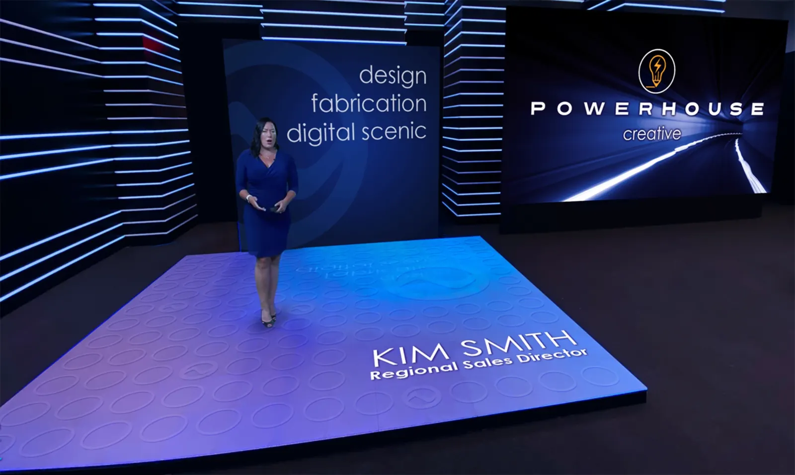
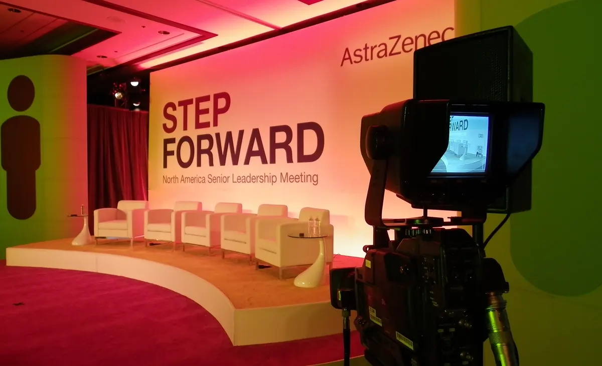
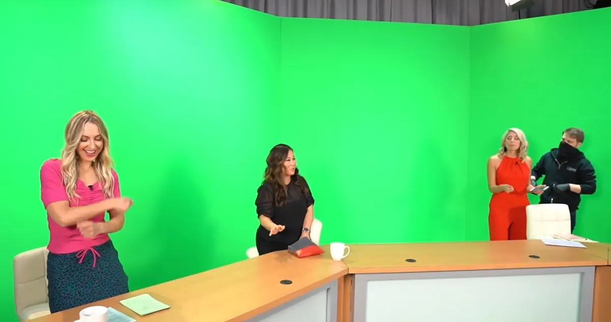

Broadcast brilliance.
Professional, polished, production-ready — our studio, crew, and custom sets deliver broadcasts that command attention on any platform.
Our studio, crew, and custom sets deliver broadcasts that command attention.
A Studio Built to Broadcast
Most agencies rent a room. We own the studio — a production-ready broadcast space in Chicago with cameras, lighting, control room, and crew under one roof.
Custom sets and branded backdrops stage your message to stand out, and seamless streaming carries it to any platform — webinars, town halls, product launches, and everything between.
What We Produce
Live Streaming/Webinars & Town Halls/Product Launches/Virtual Studio Sets/On-Demand Content/Multi-Platform Delivery
A production-ready broadcast studio — cameras, crew, and control room included.
How We Deliver
Owned studio, expert crew: a dedicated broadcast space with professional cameras, lighting, and audio — run by the people who use it every week.
Custom sets & branded backdrops: physical builds, LED walls, and green-screen virtual sets that put your brand on camera, not behind it.
Stream anywhere: seamless delivery to any platform — your event page, YouTube, LinkedIn, or a private feed.
On-demand after: every broadcast cut into evergreen content that keeps working when the stream ends.
Moments made live.



See it in action.


Come see the studio.
Book a walkthrough of our Chicago broadcast studio — meet the crew, stand on the sets, and plan your show from the control room.
Book a Tour